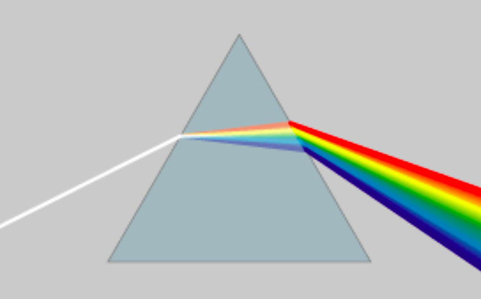
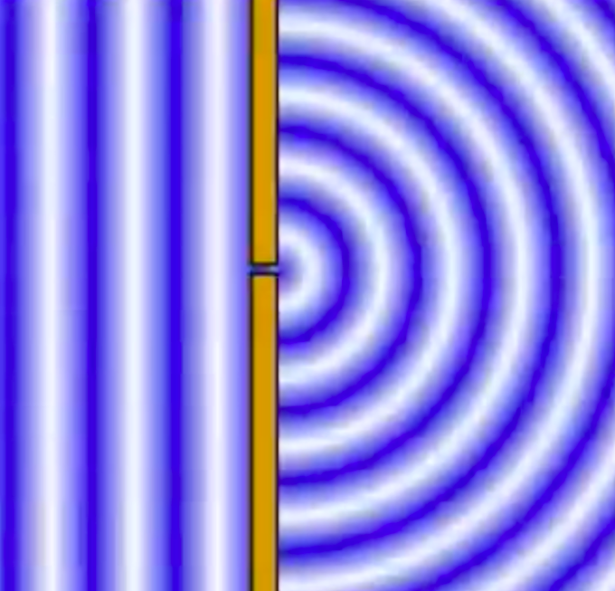
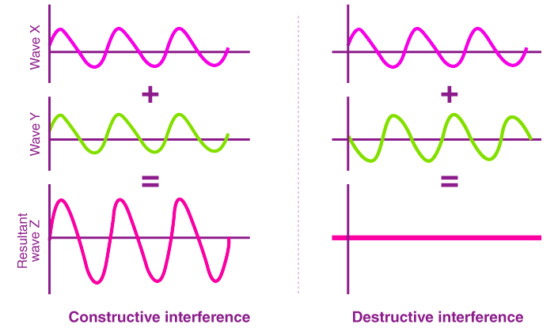
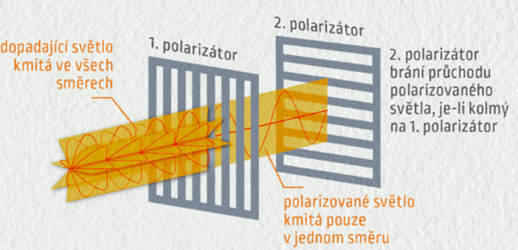

Sekce 1
Disperze
-
1. Co se stane s bílým světlem, když projde skleněným hranolem?OdpověďBílé světlo se rozloží na barevné spektrum — od červené po fialovou. Každá barva má jinou vlnovou délku, proto se každá láme pod trochu jiným úhlem. Tomuto jevu říkáme disperze.
-
2. Která barva se láme nejvíce a která nejméně?OdpověďFialová se láme nejvíce (nejkratší vlnová délka, ~400 nm). Červená se láme nejméně (nejdelší vlnová délka, ~700 nm). Čím kratší vlnová délka, tím větší lom.
-
3. Kde v přírodě vidíme disperzi světla?OdpověďNejznámějším příkladem je duha — kapičky deště fungují jako malé hranoly. Disperzi vidíme také na broušených sklech, diamantech, olejové skvrně na vodě nebo na CD/DVD discích.
-
4. Proč má duha vždy stejné pořadí barev?OdpověďProtože pořadí je dáno fyzikálními vlastnostmi světla — každá barva má pevně danou vlnovou délku, a tedy pevně daný úhel lomu. Červená je vždy nahoře, fialová dole. Tento zákon přírody se nemění.

Sekce 2
Difrakce
-
5. Co znamená, že se vlny „ohýbají"?OdpověďVlny se nešíří jen přímo, ale po průchodu štěrbinou nebo kolem překážky se rozšiřují i do stran — do oblastí, kam by přímočaré šíření nedosáhlo. Tento jev se nazývá difrakce (ohyb vlnění).
-
6. Proč slyšíme zvuk za rohem, ale světlo za roh nevidíme?OdpověďOhyb je tím větší, čím je vlnová délka blíže velikosti překážky. Zvukové vlny mají vlnovou délku v řádu decimetrů až metrů — snadno se ohýbají kolem rohů budov. Světelné vlny jsou tisíckrát kratší (stovky nm), proto se ohýbají jen nepatrně.
-
7. Co se stane s vlnami, když projdou úzkou štěrbinou? Nakresli nebo popiš.OdpověďZa štěrbinou se z každého bodu šíří nové vlny do všech stran (jako půlkruhové vlnoplochy). Na stínítku pak vidíme střídání světlých a tmavých proužků — difrakční vzor. Uprostřed je nejsvětlejší proužek.
-
8. Kdy se vlny ohýbají více — když je štěrbina větší nebo menší než vlnová délka?OdpověďVlny se ohýbají více, když je štěrbina menší — srovnatelná nebo menší než vlnová délka. Velká štěrbina způsobuje jen malý ohyb a vlny prochází téměř přímočaře.

Sekce 3
Interference
-
9. Co vznikne, když se setkají dvě vlny ve stejné fázi?OdpověďVznikne vlna s větší amplitudou (hřebeny se sčítají, dolíky se sčítají). Tomuto jevu říkáme konstruktivní interference — vlny se zesilují.
-
10. Co vznikne, když se setkají dvě vlny v protifázi?OdpověďVlny se navzájem ruší — hřeben jedné vlny padá do dolíku druhé. Výsledkem je vlna s nulovou (nebo menší) amplitudou. Tomuto jevu říkáme destruktivní interference.
-
11. Proč mýdlová bublina září různými barvami?OdpověďSvětlo se odráží od přední i zadní stěny tenkého mýdlového filmu. Tyto dva paprsky spolu interferují — některé barvy se zesilují (konstruktivní interference), jiné ruší. Výsledná barva závisí na tloušťce filmu.
-
12. Jak fungují sluchátka s „noise cancelling"?OdpověďMikrofon zachytí okolní hluk a elektronika okamžitě vytvoří zvukovou vlnu v protifázi. Tato vlna se přidá k hluku — výsledkem je destruktivní interference a hluk se potlačí nebo zcela vyruší.

Sekce 4
Polarizace
-
13. Co znamená, že světlo je „nepolarizované"?OdpověďSvětlo je příčná vlna — kmitá kolmo na směr šíření. Nepolarizované světlo kmitá ve všech směrech najednou (vodorovně, svisle i šikmo). Žárovka nebo slunce vyzařují nepolarizované světlo.
-
14. Co dělá polarizátor se světlem?OdpověďPolarizátor propustí pouze vlny kmitající v jednom konkrétním směru — ostatní pohltí. Za polarizátorem světlo kmitá jen rovině — říkáme mu lineárně polarizované. Intenzita světla poklesne přibližně na polovinu.
-
15. Proč polarizační brýle pomáhají při řízení nebo rybaření?OdpověďSvětlo odražené od vodorovných povrchů (vozovka, vodní hladina) je přirozeně vodorovně polarizované. Polarizační brýle mají svislý polarizátor, který toto odražené světlo pohltí — odlesky zmizí a viditelnost se výrazně zlepší.
-
16. Co se stane, když dáme za sebou dva zkřížené polarizátory?OdpověďSvětlo neprojde vůbec — výsledkem je úplná tma. První polarizátor propustí jen svisle kmitající světlo. Druhý polarizátor (otočený o 90°) propouští jen vodorovné kmitání — svislé kmitání zastaví úplně.
